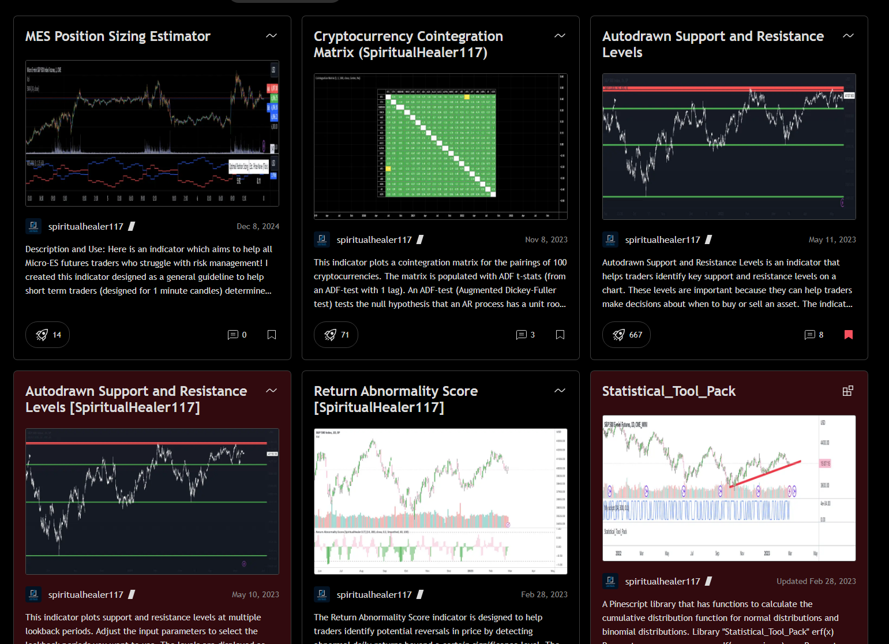

About This Project
Over the years I have made and open-sourced over 20 trading indicators as a hobbyist. The tools I made apply statistical concepts like Z-scores, linear regression and cointegration to the financial markets. This experience was challenging at times due to the limitations of Pinescript as a coding language, which I often had to work around in convoluted ways.